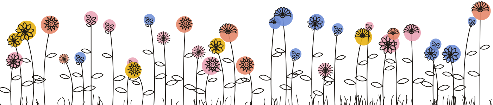

Café ucraniano en Palermo Hollywood
Café de especialidad, pastelería artesanal y sabores eslavos. Para desayunar, almorzar o merendar sin apuro.
[Foto del patio]
[Foto del salón]
[Foto de un raf]

Café de especialidad, pastelería artesanal y sabores eslavos. Para desayunar, almorzar o merendar sin apuro.
